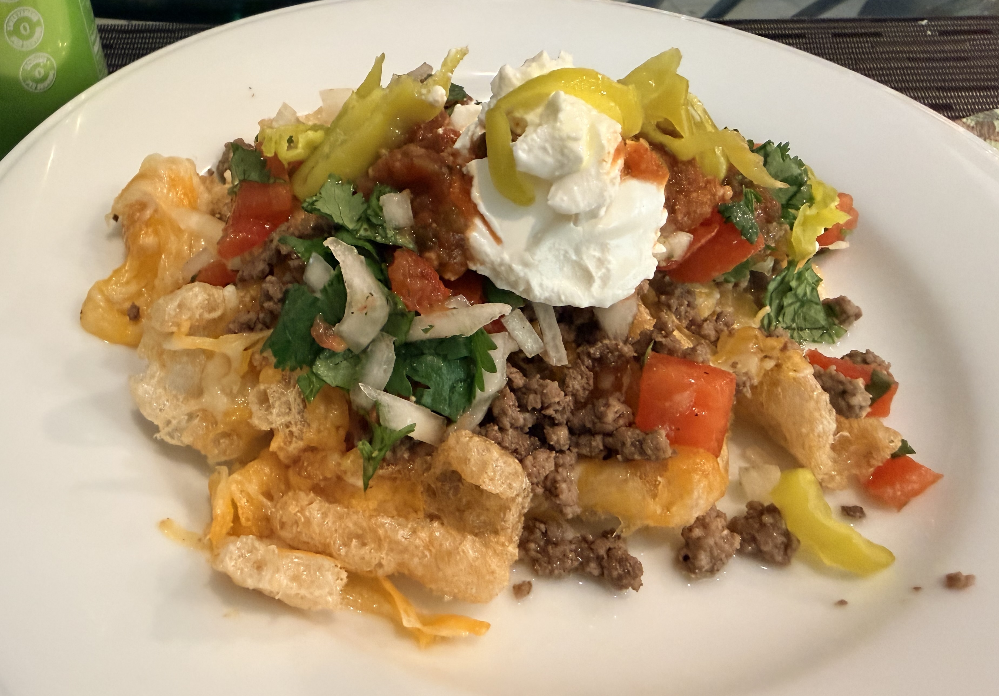

Chicharrón Nachos
Oven · Low Carb · High Protein

Ingredients
| Item | Amount |
|---|---|
| Chicharrones | 1 bag |
| Lean ground beef | 1 lb |
| Shredded aged cheddar cheese | 2 cups |
| Onion, diced | 1/2 |
| Salt | 1 tsp |
| Cumin | 1/2 tsp |
| Pepper | 1/4 tsp |
| Cilantro peppertinies | to taste |
| Sour cream | to taste |
| Salsa | to taste |
Instructions
- Sauté ground beef with diced onion until cooked through.
- Season with salt, cumin, and pepper.
- Spread chicharrones on a flat baking tray and top with shredded cheddar cheese.
- Bake at 350°F for 5 minutes until cheese is melted.
- Layer seasoned beef over the cheesy chicharrones.
- Top with cilantro peppertinies, salsa, and sour cream.